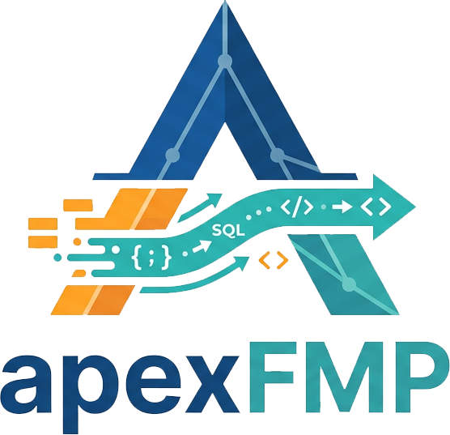

Developer framework for Claris FileMaker Pro
True "Separation Model" developer framework for FileMaker Pro!
apexFMP blends native CFMP functionality leveraging SQL, JSON, HTML, CSS, JavaScript, and the web viewer to create a framework that is modern, lightweight, and scalable. Easy to learn and implement with it's built-in navigation and CRUD data actions. Scaffold alongside your exisiting project, no need to refactor your entire project.
- All native FMP. No plugin needed. Works with both local and hosted files.
- Navigation and CRUD (create, read, update, delete) actions all built in; "right out of the gate".
- True UI separation model. User interface code can be managed and developed independently.
- Construct powerful SQL/FQL statements to retrieve and display data into your HTML UI pages.
- Eliminate "one-off" relationships in your relationship graph traditionally required for UI purposes. Relationships stay data-centric.
- Build beautiful, highly functional applications in hours with your favorite AI-assisted development tool.
- Solution-agnostic. Apply the framework to new builds or existing solutions across any industry or use case.
- Metadata-driven. Highly configurable platform that scales from simple to complex applications using agnostic code.
- Portable code. Copy/paste pre-defined scripts, layouts, custom functions without refactoring.
- File Size Reduction. Greatly decrease the size of your file(s), by as much as 75%.
Unlock Modern Git and CI/CD Tools
- Decouple your user interface into independent HTML pages. Track every visual change, automate your deployments, and collaborate using standard DevOps workflows!
- Manage your FMP UI with branch, commit, pull, and push.
- Full change history with clear who-changed-what tracking.
- Safer experimentation in branches before touching production.
- Easier team collaboration through pull requests and code reviews.
- Fast rollback to known-good versions when something breaks.
- Better release discipline with tags and versioned milestones.
- Environment consistency by syncing the same UI source across dev, test, and production.
- Built-in backup and recovery through remote repositories.
- Auditability support from commit history.
Demo File: Download a free fully unlocked FMP file and see the framework in action.
Build faster: Download a free unlocked "bare-bones" file to start a new project, or use it to copy the core framework into your existing solution.